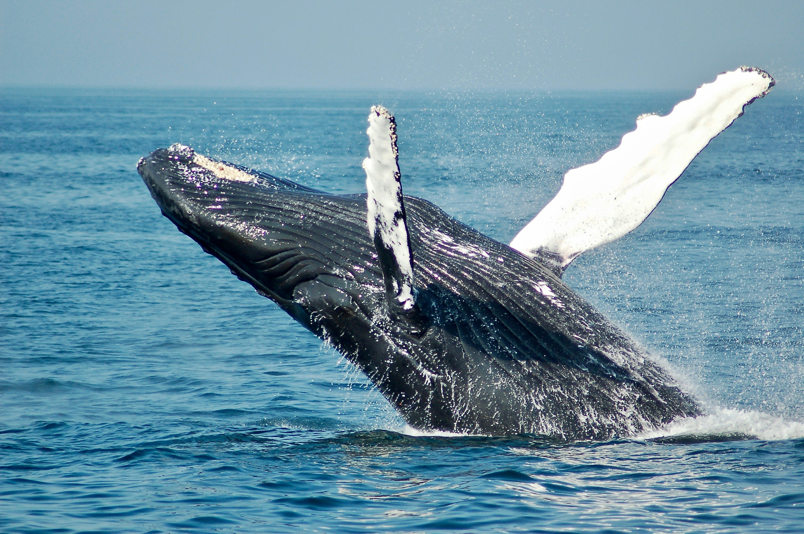

Apoie a nossa causa

Proteja a vida marinha
As baleias são símbolos da riqueza dos oceanos e precisam de proteção contra a poluição, a pesca predatória e a destruição de seus habitats. Cuidar da vida marinha é garantir o equilíbrio dos ecossistemas e preservar o futuro das próximas gerações. Cada atitude consciente ajuda a manter os oceanos vivos, limpos e seguros.

Reduza a poluição dos oceanos
O transporte marítimo faz parte da economia mundial, mas também pode causar impactos ao meio ambiente quando não é realizado de forma responsável. A preservação dos oceanos depende de ações sustentáveis, controle da poluição e respeito à vida marinha.